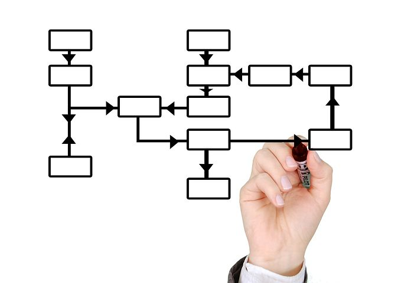
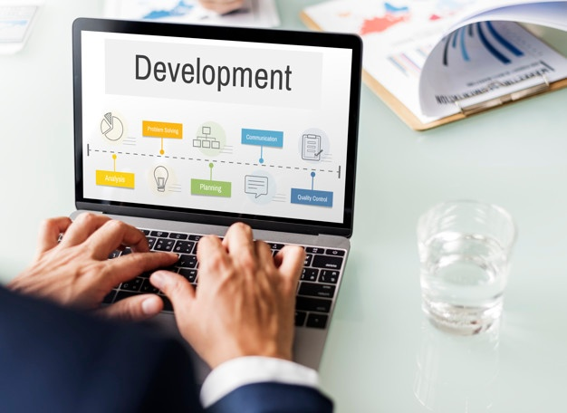

Quem Somos
A Marini-Go iniciou em 2007 contando hoje com profissionais com mais de 20 anos de experiência em sistemas Totvs Protheus e com atuação em todo território brasileiro. Estamos aqui para lhe prestar os melhores serviços possíveis, para que você sinta parceria e confiança nas tarefas executadas por nossos consultores. Trabalhamos de forma colaborativa e cooperativa para garantir que você obtenha os melhores serviços, independentemente das suas necessidades. Nós, da Marini-GO, estamos empenhados em otimizar os processos de nossos clientes com um atendimento de qualidade.

Metodologia Marini-GO
A Marini-GO utiliza metodologias nos seus diversos serviços, UX para definição de funcionalidades para interação com usuários, SCRUM para gerenciamento dos projetos, PDCA para análise de processos e melhoria contínua e outras metodologias de implantação e desenvolvimento conforme o produto/serviço a ser executado.
Valores e objetivos
Estamos aqui para lhe prestar os melhores serviços possíveis, para que você sinta parceria e confiança nas tarefas executadas. Trabalhamos de forma colaborativa e cooperativa para garantir que você obtenha os melhores serviços, independentemente das suas necessidades. Nós, da Marini-GO, estamos empenhados em otimizar os processos de nossos clientes com um atendimento de qualidade.

Metodologia de Implantação
Utilizamos ferramentas e práticas de mercado para o controle de implantação de ambiente, sistemas e módulos nas etapas de levantamento, detalhamento, planejamento, execução, validação, treinamento, acompanhamento Go Live, Status Report nos principais entregáveis.
Análise de Processos
Analisamos os processos para redução de custos, otimização das tarefas e maior qualidade das informações.
Suporte
Atendimento presencial, remoto, e-mail e Chat sobre problemas ou dúvidas na utilização dos sistemas e serviços. Sustentação aos usuários e processos tanto nos sistemas quanto na área de negócio proporcionando um suporte ágil e eficaz.
Customização
Ajudamos seu negócio a ser mais competitivo com customizações especificas nos sistemas seja em rotinas, integração de sistemas, plataformas Web, Mobile e Business Intelligence. Personalizações novas ou revisão das mesmas são de grande valor de investimento para o seu negócio.
Implantação
Implantação de sistemas Protheus e RM em um ambiente inicial, implantação de módulos e processos, levantamento, definição e configuração para adequação as necessidades e processos. Implantação presencial com envolvimento com Keyuser e remota proporcionando redução de custos.
Treinamento
Ministramos treinamentos presenciais e remoto para todos os envolvidos nos processos de forma ágil e construtivista proporcionando uma maior participação e aprendizado. Os treinamentos são efetuados de forma personalizada para cada área e nível hierárquico seja da T.I. ou de negócio.
Atualização de Ambiente
Realizamos atualização de releases, Kernel do Protheus e RM, atualizações de legislação, correções e melhorias nos sistemas. Alguns sistemas de apoio ao processo também fazem parte das atualizações constantes. Utilizamos as boas práticas de GMUD para update no ambiente.
Otimização de Processos
Uma análise nos processos para confirmação do bom andamento da execução das tarefas é obrigatória principalmente identificar oportunidades de melhoria e redução de custos\nAs mudanças constantes de mercado geram necessidade de renovação constante, auxiliamos nesta análise e ferramentas seja em sistemas ou procedimentos.
Ferramentas
Possuímos ferramentas de desenvolvimento que auxiliam a integração de sistemas ERP, Web e Mobile\nContamos com desenvolvedores em Advpl, Fluig, Java, PHP, Mobile e DBA em Microsoft SQL e Oracle.
Gerenciamento e Monitoramento
Nossa equipe faz o gerenciamento e monitoramento do seu ambiente dos sistemas de software\nRepresentamos a T.I de sua empresa nas ocorrências, atendimento aos usuários, operacionalização dos sistemas, melhorias do ambiente, performance, inovação de sistemas e tecnologias.